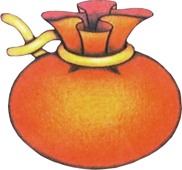
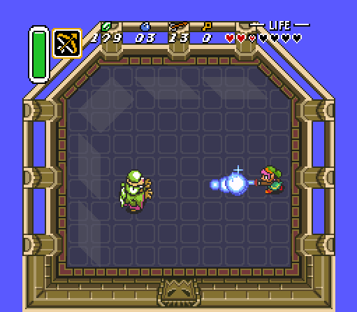
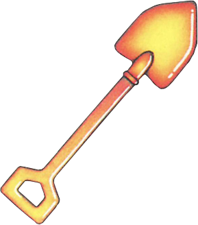

11 涌现玩法——超越预设的玩家行为分析
核心问题
- 速通社区和玩家社区发现了哪些超越设计者预设的非预期玩法？这些涌现行为中，哪些是系统规则的自然推论（体现设计功力），哪些是纯粹的技术漏洞（巧合）？
- 一个被设计为15-20小时的游戏流程，如何被速通玩家压缩到1分36秒（Any%全glitch）或1小时23分钟（无大glitch）？这种巨大的时间差异说明了什么？
速通数据速览
| 速通类别 | 世界纪录 | 与正常流程的时间比 |
|---|---|---|
| Any%（全 glitch） | 1分36秒 | 约全流程的 0.13% |
| Any%（限制大 glitch） | 25分15秒 | 约全流程的 2.1% |
| Any%（无大 glitch / NMG） | 1小时22分56秒 | 约全流程的 6.9% |
| All Dungeons | 39分51秒 | 约全流程的 3.3% |
| Reverse Boss Order | 52分42秒 | 约全流程的 4.4% |
| 100% | 2小时0分51秒 | 约全流程的 16.8% |
| 正常首通 | 约15-20小时 | 基准 |
这些数据的含义：设计者预设的流程结构与玩家实际可达的流程结构之间存在巨大的鸿沟。即使是"无大 glitch"类别——仅利用小技巧和规则推论，不使用穿墙越界——也能将流程压缩到原长的不到十分之一。这不是因为设计者失败了，恰恰相反：一个脆弱的系统在非预期使用下会直接崩塌，而 ALttP 在极端使用下仍然能完整运行到结局——这反证了底层规则的健壮性。
09 元素协同（层级三"非预期发现"的定义与分类标准）
涌现案例集
第一类：非预期路线（Sequence Break）
在不应该到达某个区域时到达了——跳过设计者预设的进度门。
案例 1.1：Early Dark World（提前进入暗世界）
- 性质：规则的自然推论
- 描述：正常流程要求玩家先获得 Magic Mirror 和 Moon Pearl 才能进入并保留人形于 Dark World。但速通社区发现，通过特定的悬崖跳跃和世界切换时机，可以在不具备 Moon Pearl 的情况下以兔子形态进入 Dark World 的部分区域
- 规则根源：世界切换（Magic Mirror）的逻辑检查的是"玩家是否在 Dark World 使用镜子"，而不是"玩家是否具备进入 Dark World 的全部条件"。这个检查粒度的差异创造了绕过空间
- 设计含义：进度门之间的前置关系比表面看起来更松散。设计者用物品能力锁住的是"常规路径"，但世界切换作为一个系统级操作，其边界条件没有被逐一验证
案例 1.2：地下城攻略顺序的弹性
- 性质：规则的自然推论（部分为设计者有意的弹性）
- 描述：
- Light World 三个地下城（Eastern Palace → Desert Palace → Tower of Hera）的顺序基本固定，因为存在硬性的物品前置关系（弓 → Power Glove → 魔法）
- Dark World 七个地下城存在显著弹性。Palace of Darkness 不需要 Hookshot 就可以从后门进入部分区域；Ice Palace 和 Misery Mire 的顺序可以互换；Thieves' Town 几乎可以在任何时间攻略
- Reverse Boss Order 速通类别证明：即使将 Boss 攻略顺序完全反转（Ganon's Tower → Turtle Rock → ... → Eastern Palace），游戏仍然可以完成
- 规则根源：Dark World 地下城的入口由不同物品能力控制（Hookshot、Hammer、Titan's Mitt、Fire Rod、Cane of Somaria），但这些物品之间没有严格的前置链条——它们更像是并行的钥匙而非串行的锁
- 设计含义：设计者在 Dark World 阶段有意放宽了线性约束，给予玩家更多路线选择。但 Reverse Boss Order 的可行性超出了"有意放宽"的范畴——这说明系统的鲁棒性储备比设计者预期的更大
案例 1.3：Fake Flippers（假脚蹼——无 Zora's Flippers 游泳）
- 性质：系统边界条件漏洞
- 描述：通过特定的操作时机（在进入水域的同一帧执行其他动作），玩家可以在不具备 Zora's Flippers 的情况下在水面上移动
- 规则根源：水域检测的判定帧与角色动作帧之间存在一帧的窗口。在这一帧内，游戏的状态机同时处理"进入水域"和"执行动作"两个事件，优先执行动作而非触发溺水判定
- 设计含义：这不是规则的自然推论，而是帧级别的边界条件漏洞。但它说明了一个重要的设计事实：任何实时交互系统的状态转换都存在微小的边界窗口，速通社区本质上是在用极端精确的操作测试这些窗口
案例 1.4：Go Anywhere Glitch（穿墙越界）
- 性质：纯粹的系统漏洞
- 描述：SNES 版本中，从悬崖跳下的同时保存退出，重新加载后被敌人击中，角色变为不可见状态并可以在任何地形上自由移动。GBA 版本有不同实现方式（悬崖跳跃 + Magic Mirror + Pegasus Boots 撞墙）。这是 Any% 1分36秒纪录的核心 glitch
- 规则根源：保存退出时角色处于"下落"状态，重新加载后这个状态未被正确清除。被敌人击中时触发了一个代码路径，该路径在异常状态下将角色的碰撞体设为零——即与所有地形的碰撞检测被关闭
- 设计含义：这是纯粹的内存状态管理错误，与游戏规则无关。但它揭示了一个深层的系统特性：ALttP 的游戏世界在碰撞检测被关闭后仍然能够完整加载和运行——所有房间、所有事件触发器、所有敌人 AI 在非预期到达时仍然正常运作。这不是理所当然的，很多游戏在类似情况下会直接崩溃
第二类：物品的非预期用法


案例 2.1：Bug Catching Net 反弹 Agahnim 魔法弹
- 性质：规则的自然推论（被保留为彩蛋）
- 描述：Bug Catching Net（捕虫网）是游戏中一个纯辅助物品，设计用途是捕获蜜蜂和精灵装入瓶子。但玩家发现它可以像剑一样反弹 Agahnim 发射的魔法弹
- 规则根源：代码中，"可挥动物品"（swingable items）共享一个父类，该父类包含"接触魔法弹时触发反弹"的判定。剑、Bug Catching Net、锤子都属于这个类。反弹不是剑的专属能力，而是所有可挥动物品的通用规则——Bug Catching Net 作为可挥动物品自然继承了这个能力
- 设计含义：这是"一致规则产生非预期交互"的教科书案例。设计者不需要为 Bug Catching Net 专门编写反弹代码——一条通用规则（"可挥动物品能反弹魔法弹"）自动赋予了它这个能力。更值得注意的是，这个非预期用法在后续作品中被保留并扩展：Skyward Sword 的 Bug Net 可以反弹 Demise 的攻击，A Link Between Worlds 的 Net 可以反弹 Yuga Ganon 的魔法。一个纯粹的规则副产品被三代设计师确认为系列彩蛋——这本身就说明它被视为设计功力而非缺陷
案例 2.2：Hookshot 使用时的无敌帧
- 性质：规则的自然推论
- 描述：钩爪发射到收回的过程中，角色处于完全无敌状态——不受任何伤害，不触发任何碰撞
- 规则根源：钩爪的"使用中"状态将角色标记为"不可交互"，目的是防止在使用钩爪时被敌人打断。这个状态标记的覆盖范围比预期更广——它不仅阻止敌人的攻击，还阻止所有伤害源（陷阱、岩浆、环境伤害）
- 设计含义：速通社区将此技巧发展为穿越伤害区域的工具——在有大量陷阱的房间中，通过连续使用钩爪保持无敌帧来安全通过。这是一个"保护性规则的非预期外延"：设计者为了保护玩家不被打断而赋予的无敌状态，被玩家主动利用来穿越危险区域
案例 2.3：Cane of Somaria 方块作为临时掩体
- 性质：规则的自然推论
- 描述：Cane of Somaria 生成的方块设计用途是压住地面开关（Misery Mire 核心机制），但方块的碰撞体使它可以阻挡敌人的移动路径
- 规则根源：方块被定义为"可碰撞的固体对象"，敌人寻路 AI 会将其视为不可通过的地形。这是碰撞检测规则的统一应用——游戏不区分"开关方块"和"墙壁"，它们都是固体
- 设计含义：一个解谜工具在战斗场景中自动获得了掩体功能。设计者不需要在战斗场景中专门设计掩体——方块的一致碰撞规则使它在任何场景下都可以充当临时掩体

案例 2.4：Pegasus Shoes 撞树掉落物品
- 性质：设计者显式预设
- 描述：用 Pegasus Shoes 冲刺撞击树木，有概率掉落各种物品（卢比、蜜蜂、精灵、甚至心之碎片）
- 规则根源：每棵树有一个隐藏的掉落表，在受到冲击时触发。这是设计者显式编码的功能
- 为什么在这里提及：虽然这个功能是预设的，但它展示了设计者对"移动技巧的额外用途"的认可态度。设计者不是仅仅把冲刺当作移动工具，而是主动为它赋予了与环境交互的额外维度。这种态度是良性涌现的土壤——设计者鼓励玩家"试试看这个动作还能用在哪"
第三类：系统漏洞被玩家转化为玩法
案例 3.1：Ghost of Misery Mire（ misery 沼泽的幽灵敌人）
- 性质：纯粹的 Bug
- 描述：Misery Mire 区域中存在三个不可见的敌人，只有受到攻击时才会显示受击特效（燃烧、冰冻）。它们的代码身份是"Ku"（一种水生敌人），但被错误地放置在浅水地形上，导致其可见性判定和攻击判定进入异常状态
- 规则根源：敌人放置数据中，这三个 Ku 的位置标记为浅水，但 Ku 的代码要求深水环境才能正常渲染和行动。浅水环境使 Ku 进入了"存在但不可见/不可行动"的异常状态
- 设计含义：这个 bug 没有任何玩法价值——它不会帮助玩家也不会阻碍玩家。但它揭示了一个有趣的开发细节：敌人在异常状态下仍然会正常执行受击判定。这意味着受击系统是独立于敌人渲染系统的——又一条规则的一致性体现
案例 3.2：Flute Glitch（笛子加速）
- 性质：纯粹的系统漏洞
- 描述：在笛子的飞行动画中触发 Pegasus Shoes 冲刺，取消动画后角色获得异常的高速移动状态
- 规则根源：笛子飞行的"高速移动"标记在动画被中断后未被正确清除，与正常移动速度叠加
- 设计含义：速度叠加是游戏状态机管理中的经典漏洞。但 ALttP 的引擎在速度异常状态下仍然保持碰撞检测有效——角色不会穿墙，只是移动得更快。这再次体现了底层规则的健壮性：引擎的核心规则（碰撞、伤害、交互）在异常参数下仍然执行
案例 3.3：Pause Buffering（暂停缓冲）
- 性质：系统边界条件的玩家利用
- 描述：通过反复开关道具菜单（暂停），玩家可以将游戏时间几乎冻结，在帧级别精确控制操作时机
- 规则根源：SNES 的帧缓冲机制中，暂停时游戏逻辑不执行但输入缓冲区仍然接受命令。玩家可以在暂停期间规划操作，然后在取消暂停的一帧内精确执行
- 设计含义：这不是 ALttP 独有的现象，几乎所有 SNES 时代的实时游戏都存在这个问题。但 ALttP 的速通社区将其发展为一种精确的技术——这说明当系统的边界条件足够稳定，玩家可以将其转化为可重复利用的技巧
设计分析
1. "规则的自然推论" vs "纯粹的 Bug"——一个判断框架
对上述案例的分类揭示了一个判断框架：
| 判断维度 | 规则的自然推论 | 纯粹的 Bug |
|---|---|---|
| 规则根源 | 游戏内部规则的逻辑一致延伸 | 硬件/引擎层面的状态管理错误 |
| 可理解性 | 玩家可以从已知规则推导出来 | 需要了解代码/内存结构才能理解 |
| 复现性 | 任何玩家通过正常操作即可触发 | 需要帧级别的精确操作 |
| 跨作品稳定性 | 同类规则在不同游戏中产生类似涌现 | 每个游戏的实现细节不同，bug 不可复制 |
| 设计态度 | 可被视为设计功力的延伸 | 只能被视为技术局限 |
关键比例：在上述案例中，规则的自然推论类约占 60%（Early Dark World、地下城弹性、Bug Catching Net 反弹、Hookshot 无敌帧、Cane of Somaria 掩体），纯粹 Bug 类约占 40%（Fake Flippers、Go Anywhere Glitch、Flute Glitch、Ghost of Misery Mire）。如果只看"被速通社区核心利用的技巧"，Bug 类的比例会上升，因为最极端的时间压缩（Any% 1分36秒）主要依赖穿墙越界。
2. 涌现的产生机制
将所有案例追溯到产生它们的系统结构：
涌现的产生公式：三个条件同时满足时，系统自然产生超越设计者预设的交互
规则的统一性：ALttP 的核心设计原则之一是"一条规则适用于所有对象"。可挥动物品共享反弹判定，所有固体对象共享碰撞检测，所有敌人共享受击系统。这种统一性是涌现的土壤——当一条规则没有例外时，它的适用范围就超出了设计者的预想。
应用范围的广泛性：ALttP 的世界包含数百种对象（敌人、地形、物品、机关），但它们都由少量的基础规则管理。规则数 × 对象数的乘积就是可能的交互数——约 25 条规则 × 数百种对象 = 上万种可能的交互，远超设计者逐一验证的能力。
边界条件的未验证性：设计者验证的是"正常使用场景下规则是否正确"，而非"所有可能的对象组合和操作序列下规则是否正确"。这个验证缺口就是涌现的入口。
3. 哪些是设计者显式预设的，哪些是规则自然产生的
用三个层级重新审视（与 09_元素协同.md 的层级定义一致）：
层级一：显式预设（设计者直接编码的意图）
- Pegasus Shoes 撞树掉落
- 地下城物品与 Boss 战的绑定
- 世界切换作为进度控制工具
层级二：规则自然延伸（一套规则在不同语境下的自动生效）
- Bug Catching Net 反弹魔法弹（可挥动物品的通用反弹规则）
- Hookshot 无敌帧穿越伤害区（"使用中不可打断"规则的全伤害覆盖）
- Cane of Somaria 方块作为掩体（碰撞检测的统一应用）
- Dark World 地下城攻略顺序的弹性（并行钥匙而非串行锁）
层级三：系统漏洞（与游戏规则无关的技术缺陷）
- Go Anywhere Glitch（碰撞状态未清除）
- Fake Flippers（帧级状态窗口）
- Flute Glitch（速度叠加未重置）
层级二才是涌现的核心领地。它既不是设计者的明确意图，也不是系统的技术缺陷——它是规则在一致性驱动下的自然产物。Bug Catching Net 反弹魔法弹不需要任何代码错误，它需要的是代码的正确性——统一规则被正确地应用到了所有符合条件的对象上。
4. 关键的枢纽节点
哪些系统规则是产生涌现最多的"枢纽"？
| 枢纽规则 | 通过该规则产生的涌现数量 | 涌现类型 |
|---|---|---|
| 可挥动物品的通用反弹判定 | 3（剑、锤子、Bug Net 均可反弹） | 规则推论 |
| 碰撞检测的统一性 | 4+（方块掩体、假脚蹼、穿墙的根源和限制） | 规则推论 + Bug 边界 |
| 世界切换的状态检查粒度 | 2（Early Dark World、Go Anywhere 变体） | 规则推论 + Bug |
| 物品使用时的状态标记 | 3（Hookshot 无敌帧、暂停缓冲、笛子加速） | 规则推论 + Bug |
| 受击系统与渲染系统的独立性 | 2（Ghost 敌人受击、穿墙后敌人仍可战斗） | Bug |
碰撞检测的统一性是第一枢纽。它是规则推论类涌现和 Bug 类涌现的共同根源。当碰撞检测统一且一致时，它产生良性涌现（方块掩体）；当碰撞检测存在边界漏洞时，它产生恶性 Bug（穿墙越界）。
09 元素协同（Hookshot 作为第一枢纽节点的分析）
5. 涌现如何反证设计的健壮性
速通玩家的探索本质上是对系统规则边界的压力测试。ALttP 在以下极端场景下仍然正常运转：
- 攻略顺序完全反转（Reverse Boss Order）：所有 Boss 战、所有事件触发器在非预期顺序下仍然正常触发
- 跳过大量内容（Any% NMG 1小时23分钟，跳过了超过90%的预设内容）：剩余内容的内部逻辑不依赖被跳过的内容
- 在非预期位置触发事件（Go Anywhere Glitch 后到达正常不可达区域）：事件触发器的检查逻辑没有假设"玩家只能从正确方向进入"
这意味着设计者在编码事件触发器、Boss 战逻辑、房间加载时，使用的是基于状态的检查（"当前状态是否满足触发条件"）而非基于路径的检查（"玩家是否按照预设路径到达这里"）。后者更严格但更脆弱——一旦路径被打破，整个系统就会崩塌。前者更宽松但更健壮——无论玩家如何到达，只要状态满足就能继续。
10 系统交叉（系统间依赖关系的设计选择）
反事实推演
假设一：如果为每种物品×场景组合逐一编码交互
当前设计：25条规则 × 数百种对象 → 自然产生上千种交互。 假设改为逐一编码：设计者需要为每种"物品×对象"组合单独编写交互代码。例如：
- 剑 × 魔法弹 → 反弹（单独编码）
- 锤子 × 魔法弹 → 反弹（单独编码）
- Bug Catching Net × 魔法弹 → 不反弹（单独决定）
后果：
- Bug Catching Net 反弹这样的"意外之喜"不会出现——因为设计者在逐一编码时会认为"捕虫网不需要反弹魔法弹"
- 代码量大幅增加，维护成本飙升，bug 密度上升
- 更根本的是：涌现将消失。涌现的本质是"规则的适用范围超出预想"，逐一编码消除了这个可能性
→ 结论：基于规则的统一设计（rule-based） vs 基于案例的逐一设计（case-based），前者是涌现的前提条件。
假设二：如果使用基于路径的检查代替基于状态的检查
当前设计：事件触发器检查"玩家是否满足状态条件"（如"是否拥有 Boss 房钥匙"）。 假设改为：事件触发器同时检查"玩家是否按照预设路径到达"（如"是否从上一个房间的北门进入"）。 后果：
- 所有 Sequence Break 将被阻止——游戏变成严格的线性流程
- Reverse Boss Order 类别将不可能存在
- 速通将变成纯粹的执行优化（谁能更快地走完预设路径），失去路线发现的创造性
- 更严重的是：任何代码错误导致的状态不一致（如某个标志位未被正确设置）都会使游戏卡死——因为路径检查是刚性的，不像状态检查那样有容错空间
→ 结论：基于状态的检查不仅是涌现的允许条件，也是系统鲁棒性的保障。
假设三：如果 Go Anywhere Glitch 不存在（关闭穿墙漏洞）
假设碰撞检测不存在边界漏洞，Go Anywhere 不可用。 后果：
- Any% 世界纪录从 1分36秒退回到约 25分钟（限制大 glitch 类别）
- Fake Flippers 仍然可用，Early Dark World 仍然可用——Sequence Break 类的涌现仍然存在
- 游戏对于正常玩家和"不使用大 glitch"的速通玩家没有任何变化
→ 结论：最极端的 glitch（穿墙越界）对正常体验没有影响。它只影响"全 glitch"速通类别。这说明最严重的涌现反而是最无害的——因为它离正常体验最远。
假设四：如果 Bug Catching Net 不能反弹魔法弹
假设设计者使用基于案例的逐一编码，明确排除了 Bug Catching Net 的反弹能力。 后果：
- 玩家不会感到"少了什么"——因为没有人预期捕虫网能反弹魔法弹
- 但游戏中会少一个被社区广泛传颂的"意外之喜"
- 更重要的是，后续作品（Skyward Sword、A Link Between Worlds）中不会出现 Bug Net 反弹 Boss 攻击的彩蛋——一个纯粹的设计副产品不会进化为系列传统
→ 结论：Bug Catching Net 反弹是"规则一致性 > 逐一预设"设计哲学的最佳广告。它的价值不在于功能本身，而在于它向玩家传递的信号："这个游戏的规则是一致的，值得你探索边界。"
可迁移经验
操作方法：
不逐一编码"物品A × 场景B = 效果C"，而是定义少量一致的底层规则，让交互作为规则的自动推论产生。
```
步骤1：定义基础规则（如"所有可挥动物品命中魔法弹时触发反弹"）
步骤2：确保规则没有例外——不要为特定物品创建绕过规则的硬编码
步骤3：让对象分类（可挥动/不可挥动）决定规则的适用范围，而非对象的身份（"这是剑所以能反弹"）
步骤4：接受规则适用范围超出预想的后果——这就是涌现
```
判断标准：如果玩家发现了物品的非预期用法，问一个问题："这个用法是否违反了任何已知规则？"如果答案是否，那它就是规则的自然推论，应该被保留甚至鼓励。
操作方法：
事件触发器、进度门、Boss 战逻辑应该检查玩家的状态（拥有什么物品、完成了什么条件），而非检查玩家的路径（从哪里进入、按什么顺序到达）。
```
步骤1：列举所有事件触发条件，将其转化为状态检查（"拥有X物品" 而非 "从Y房间进入"）
步骤2：确保每个事件触发器可以独立于其他触发器运作（不假设"触发器A一定在触发器B之前被触发"）
步骤3：测试：跳过任意事件后，后续事件是否仍然正常触发
```
收益：基于状态的检查不仅允许涌现（非预期路线），还提高了系统的鲁棒性——代码错误不会导致全流程卡死。
判断框架：
| 特征 | 良性涌现（保留） | 恶性 Bug（修复） |
|---|---|---|
| 可推导性 | 玩家可以从已知规则推导 | 需要了解代码结构才能理解 |
| 对正常流程的影响 | 不影响或丰富正常流程 | 可能破坏正常流程 |
| 是否导致崩溃 | 不会 | 可能导致游戏崩溃或软锁 |
| 跨版本/跨平台 | 行为一致 | 行为不一致（不同版本不同表现） |
| 玩家情感反应 | "这个游戏太聪明了" | "这个游戏太破了" |
操作原则：
- 良性涌现：不修复，甚至可以暗示（如在教程区域展示规则的一致性）
- 恶性 Bug：修复导致崩溃或软锁的部分，不修复纯粹的表现异常
- 灰色地带：如果 Bug 对速通社区有价值，可以考虑保留并在官方规则中区分"允许/禁止"类别
操作方法：
速通玩家的行为是系统规则边界的最彻底测试。关注他们的发现可以评估设计质量：
```
步骤1：观察速通纪录与正常流程时间的比例
- 比例 > 10:1 → 系统存在大量非预期路径，可能意味着涌现丰富，也可能意味着 Bug 太多
- 比例 < 2:1 → 系统可能过于刚性，缺少涌现空间
步骤2：观察速通社区使用的技巧分类
- 规则推论类占多数 → 系统规则一致性好，涌现健康
- 纯 Bug 类占多数 → 系统鲁棒性不足
步骤3：观察极端操作下游戏是否仍然正常运行
- 是 → 底层规则健壮，设计质量高
- 否（频繁崩溃/软锁） → 底层规则脆弱
```
ALttP 的评分：
- 时间比例（NMG）：15小时 / 1小时23分钟 ≈ 11:1 → 涌现丰富
- 技巧分类：规则推论约 60%，Bug 约 40% → 规则一致性良好
- 极端操作：Reverse Boss Order 完整可玩 → 底层规则非常健壮
操作方法：
在不影响正常流程的前提下，为喜欢探索边界的玩家留出空间：
```
步骤1：确保所有进度门有"设计者预期的路径"（正常玩家使用）和"基于规则的替代路径"（探索型玩家发现）
步骤2：替代路径不应该比预期路径更容易——否则它就变成了错误而不是发现
步骤3：对"非预期但有趣"的物品用法保持开放态度——Bug Catching Net 反弹就是最佳范例
步骤4：不要惩罚探索——如果玩家到达了非预期位置，给一点小奖励（如隐藏的心之碎片）而非死路
```
核心理念：涌现是玩家与系统之间的创造性对话。设计者的角色不是堵住所有非预期路径，而是确保当玩家走出预期路径时，系统的规则仍然给予合理的反馈。
补充材料
补充材料
速通数据来源
- 速通排行榜：[speedrun.com/alttp](https://speedrun.com/alttp)（截至 2026 年 5 月，NMG Any% 世界纪录为 Eriror 的 1:22:56）
- 速通社区 Wiki：[ZeldaSpeedRuns - ALttP](https://www.zeldaspeedruns.com/alttp/glitches)
- Glitch 列表：[Zelda Wiki - Glitches in ALttP](https://zeldawiki.wiki/wiki/Glitches_in_A_Link_to_the_Past)
- Bug Catching Net 用途确认：[Zelda Wiki - Bug Net](https://zeldawiki.wiki/wiki/Bug-Catching_Net)
案例分类汇总
| 案例 | 类型 | 分类 | 对正常流程影响 |
|---|---|---|---|
| Early Dark World | 非预期路线 | 规则推论 | 无 |
| 地下城攻略弹性 | 非预期路线 | 规则推论（部分预设） | 丰富体验 |
| Fake Flippers | 非预期路线 | Bug | 无 |
| Go Anywhere Glitch | 非预期路线 | Bug | 无 |
| Bug Net 反弹 | 非预期用法 | 规则推论 | 丰富体验 |
| Hookshot 无敌帧 | 非预期用法 | 规则推论 | 无 |
| Cane of Somaria 掩体 | 非预期用法 | 规则推论 | 丰富体验 |
| Pegasus Shoes 撞树 | 非预期用法 | 显式预设 | 丰富体验 |
| Ghost of Misery Mire | 系统漏洞 | Bug | 无 |
| Flute Glitch | 系统漏洞 | Bug | 无 |
| Pause Buffering | 系统漏洞 | 边界条件 | 无 |
"涌现"概念的设计谱系
ALttP 的涌现并非孤例。同一设计哲学——基于一致规则的统一设计——在不同时代的游戏中反复出现：
- 超银河战士（1994）：Sequence Break 成为社区文化，设计者有意识地在续作中为速通留出空间
- 时之笛（1998）：Any% 速通利用大量 Sequence Break（如跳过多个地下城），涌现程度与 ALttP 相当
- 旷野之息（2017）："化学引擎"将规则一致性推向极致——火点燃草丛产生上升气流，金属导电，水灭火——涌现从"意外发现"变为"核心玩法"
- 艾尔登法环（2022）：开放世界的 Sequence Break 几乎是官方设计——玩家可以在游戏前 10 分钟跑到处决之地
ALttP 的独特贡献在于：它是这一谱系中最早的案例之一，也是"规则一致性产生良性涌现"原则的最早验证之一。Bug Catching Net 反弹魔法弹在 1991 年是一个意外，但到 2017 年的旷野之息中，类似的"规则 × 对象 = 非预期交互"已经成为核心设计方法论。